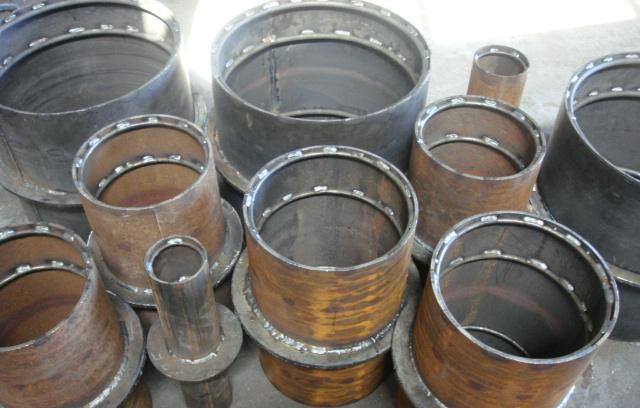
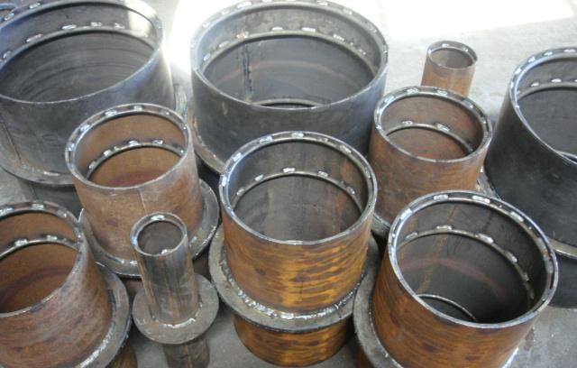

Сальники
Одним из самых распространенных видов закладных деталей, которые используются при прокладке инженерных коммуникаций различных строящихся объектов, в том числе при прокладке труб (водопроводных, канализационных и других) является сальник. Производственно-коммерческая фирма «МЕТЛАЙН» располагает огромным выбором закладных деталей. На нашем предприятии вы можете заказать изготовление сальников разных серий. При производстве любых моделей мы руководствуемся действующими стандартами качества.
Основные виды
Сальники могут быть двух видов: набивные и нажимные. Они отличаются конструктивными особенностями и сферой применения. Серия сальников набивных подходит для использования при неагрессивных средах, при этом температура должна быть не выше +50 градусов. Перепад давления может составлять не выше 10 м водяного столба (не более 0,1 МПа). Набивные модели препятствуют смещению трубопроводных элементов в период эксплуатации.
Сальник нажимной серии 5.900 применяют с целью уплотнения прокладки инженерных систем через фундамент или цокольные системы. Он подходит также для объектов, в которых проведен газ. В этой модели предусмотрен грундбукс – специальное металлическое кольцо, которое обеспечивает надежную герметизацию узла.
При выборе набивки учитывают особенности эксплуатации трубопроводной системы. Если речь идет о коммуникациях с питьевой водой, то используют хлопчатобумажную набивку.
Если в трубах содержится техническая вода, то подходят графитированные лубяные волокна или резиновый шнур.
При выборе металлоизделия руководствуются особенностями климатических условий:
- У1 – диапазон температур составляет от -40 до +40 градусов;
- ХЛ – диапазон температур колеблется в пределах от -60 до +40 градусов.
На нашем заводе вы можете купить сальник разных серий. Выпускаемая продукция отличается хорошим качеством и высокими эксплуатационными характеристиками. При производстве металлоизделий используется стальной прокат, что гарантирует прочность и долговечность конструкций.
 
